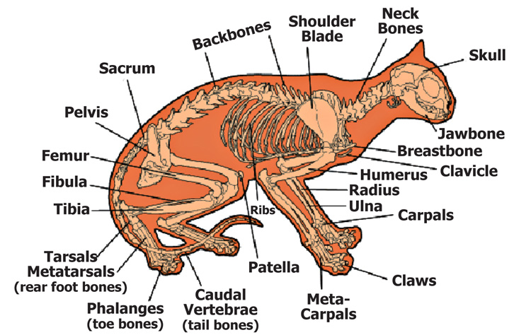
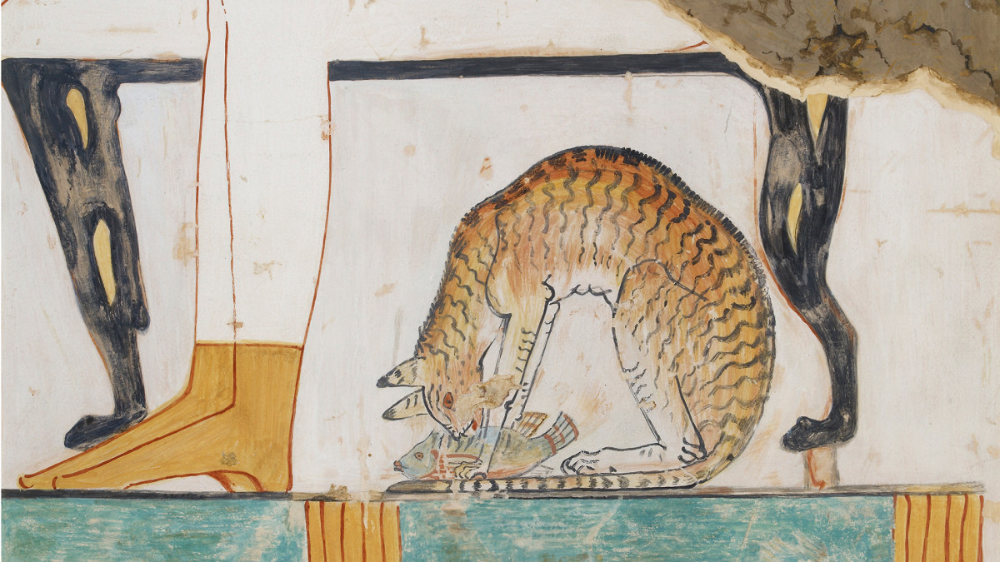

Common Name: Cat
Scientific Name: Felis catus
Temporal range: 9,500 years ago - present
Lifetime : 12 - 18 years
Diet: Carnivore
Favourite food: pork, chicken and beef
Hight: 23 - 25 cm
Lenght: 46 cm (without its tail)
Note: Thease are just avarege stats!
Family and abilities
Cat, (Felis catus), also called house cat or domestic cat, it is a domestic
species of small carnivorous mammal and member of the family FelidaeCats are commonly kept as house pets but can also be farm cats or feral cats.
The domestic are kept in home(or in some casses in a garden).
The are valued by humans for companionship and their ability to kill rodents. About 60
cat breeds are recognized by various cat registries.
Anatomy

Just like the other other felid species it shares a similarity in its anatomy:
it has a strong flexible body, quick reflexes, sharp teeth, and retractable
claws adapted to killing small prey and keep an active life of hunting.
Its night vision and sense of smell are well developed. Cat communication
includes vocalizations like meowing, purring, trilling, hissing, growling, and
grunting as well as cat-specific body language. The cat is a social species,
but it is a solitary hunter.
Cat's pregnancy
The female cat can have kittens, cat pregnancy normally lasts between 63 to 67 days,
but it can be hard to know exactly how long a cat is pregnant for. You can't tell if your
cat is pregnent, because it won't show any symptoms until it
is a few weeks from give birth.
Cats can have an average of four to six kittens per litter
Cats in ancient Egypt

The domestication of cats began in ancient Egypt,
where they were venerated as divinities from
around 3100 BC. Their domestication occurred in Western Asia around 7500 BC as recent andances
in in archaeology and genetics have showned us.
Cat's count
The exact number of cats in the world is hard to tell , but it's believed that the entire global cat population
counts over 400 million felines, icluding pets, as well as strays and feral cats.